HostFSとは
HostFSは、ブラウザで選んだ手元のフォルダを、ゲスト側から1つのドライブ
(例: C:)として見せる機能です。ディスクイメージを介さず、
フォルダの中身をそのままdirやtype、コピーで
扱えます。画面下部のSCSI行の下にある「HostFS」行から操作します。
対応環境はChrome系のPC・Android(showDirectoryPickerが使える
ブラウザ)です。iPhone(Safari)とFirefoxでは使えません。
What is HostFS?
HostFS lets a folder you pick in the browser appear to the guest as a single
drive (e.g. C:), without going through a disk image — you can
dir, type, and copy files straight out of that folder.
Use the "HostFS" row below the SCSI row at the bottom of the player.
Supported on Chrome-family browsers on PC and Android (any browser with
showDirectoryPicker). Not supported on iPhone (Safari) or
Firefox.
はじめての準備
1HostFS行を表示する
「…」メニュー→「表示」グループ→「HostFSを表示」を押します。 フォルダがつながっていれば、再接続待ちの状態でも自動的に表示されます。
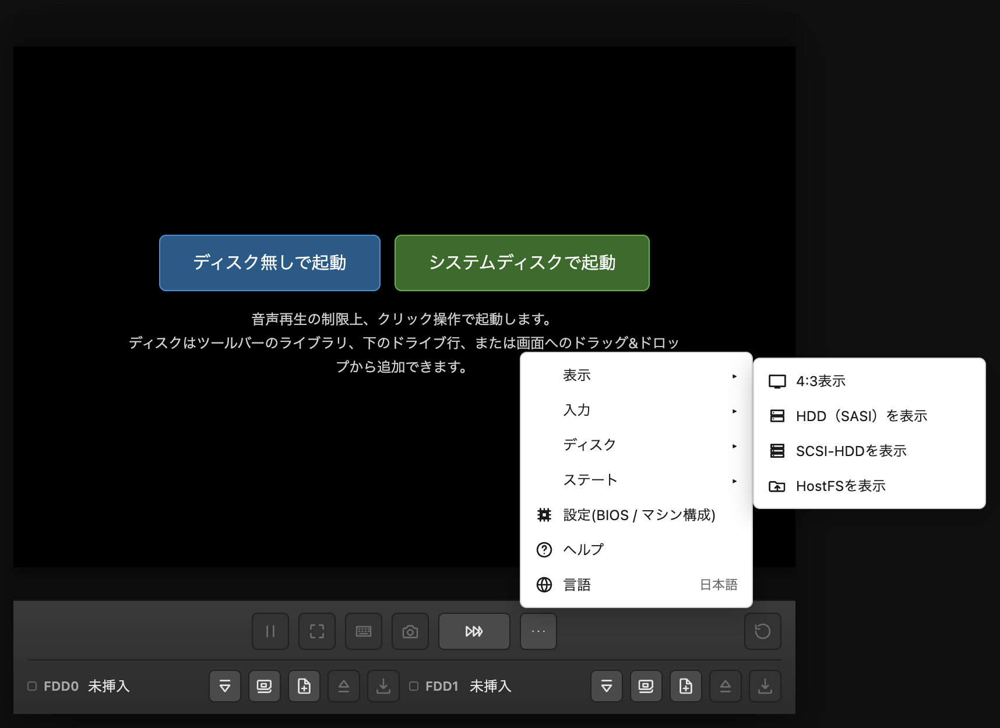
2フォルダをつなぐ
HostFS行の「フォルダをつなぐ」ボタン(アイコン。マウスを乗せると名前が出ます)を 押すと、読み取り専用/書き込みも許可のどちらでつなぐか選ぶ ダイアログが出ます。選んでから、覚え書き(任意)を書いて、フォルダを選びます。
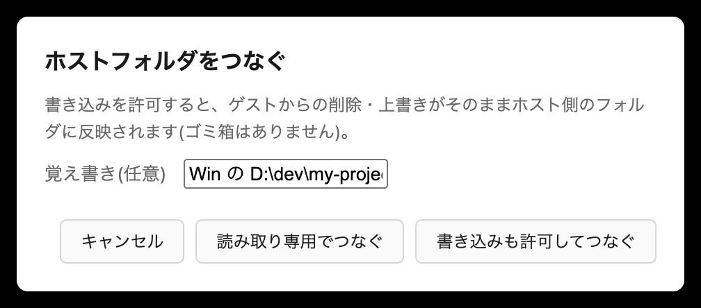
3ディスクへHostFSを組み込む
「ディスクライブラリ」を開き、同梱ディスク行(human302.xdf)の
「HostFSを組み込む」を押します。確認ダイアログで「はい」を選ぶと、
ライブラリにhuman302-hostfs.xdfという行が新しく増えます。
自動では挿入されません。同梱ディスクそのものは書き換わりません。
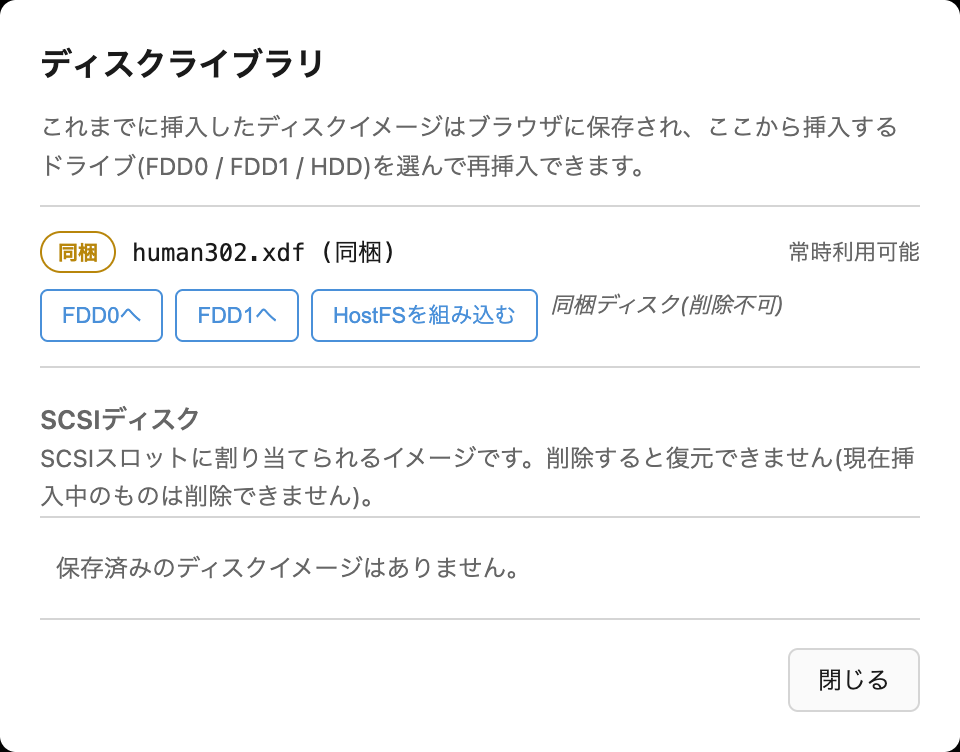
4FDD0へ入れる
いま増えた human302-hostfs.xdf の行の「FDD0へ」を押します。
押すとライブラリは自動で閉じます。
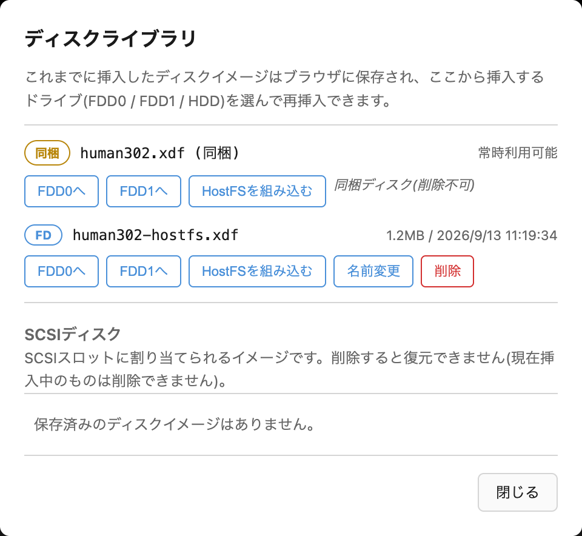
5起動する
まだ起動していなければ、起動オーバーレイの「セットしたディスクで起動」 を押します。すでに 起動中の場合は、ツールバー右端の丸い矢印(リセット)を押します。
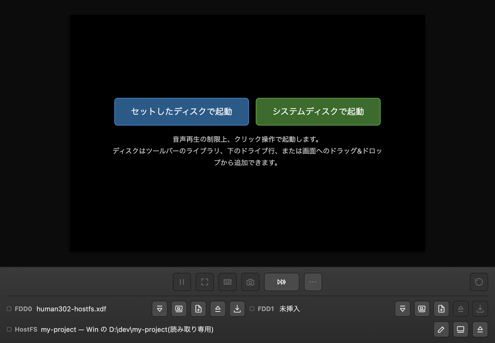
6案内表示を確認する
起動画面に「HostFS version 1.00 (WebX68k)」と
「ホストのフォルダを C: に割り当てました」が表示されます
(HDDがある場合はD:等になることもあります)。
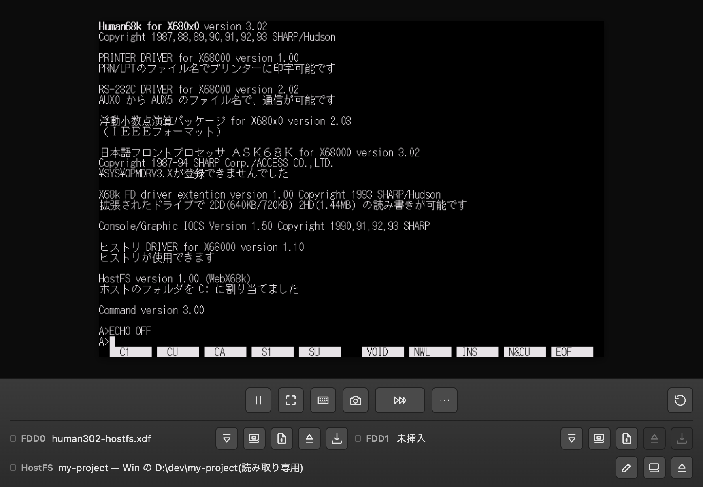
7使ってみる
ゲスト側で dir c: と打つと、つないだフォルダの中身が見えます。
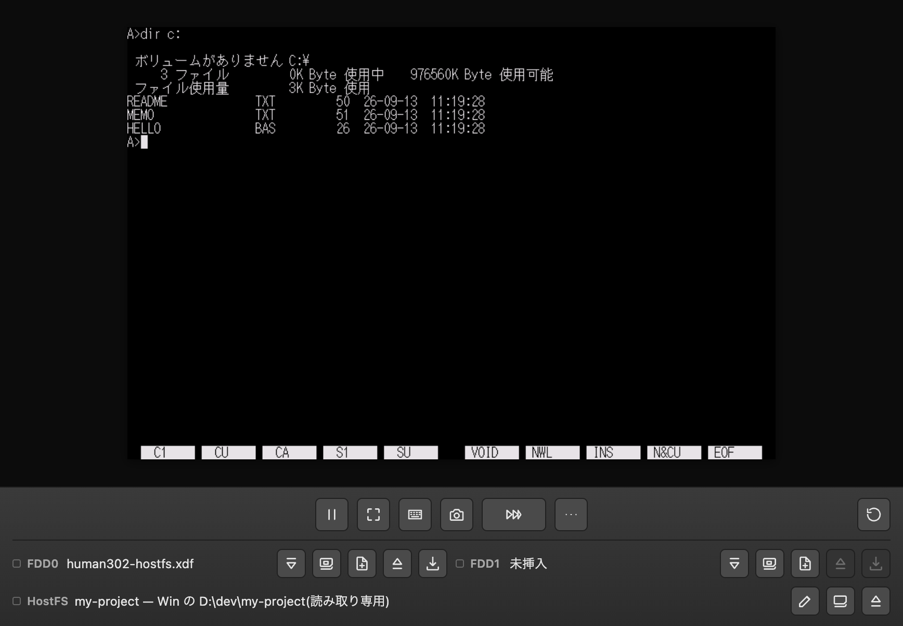
First-time setup
1Show the HostFS row
Open the "…" menu → "Display" group → "Show HostFS". If a folder is connected, the row also appears automatically even while it's waiting to reconnect.
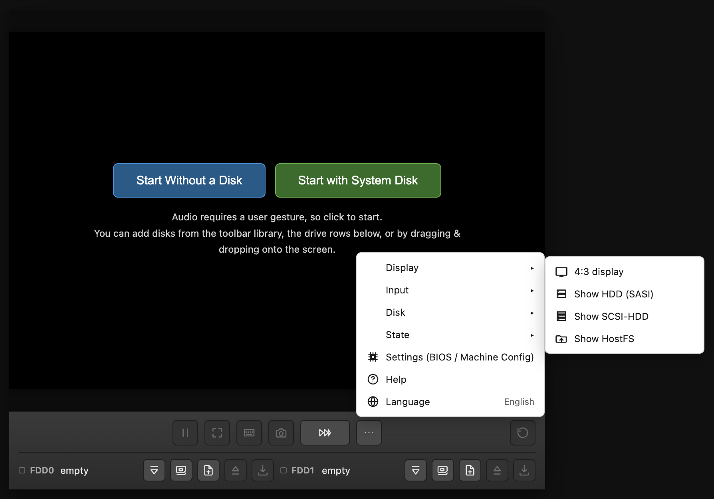
2Connect a folder
Click the "Connect a folder" button (an icon; hover to see its name) on the HostFS row — a dialog asks whether to connect read-only or with writes allowed. Choose one, optionally jot down a note, then pick the folder.
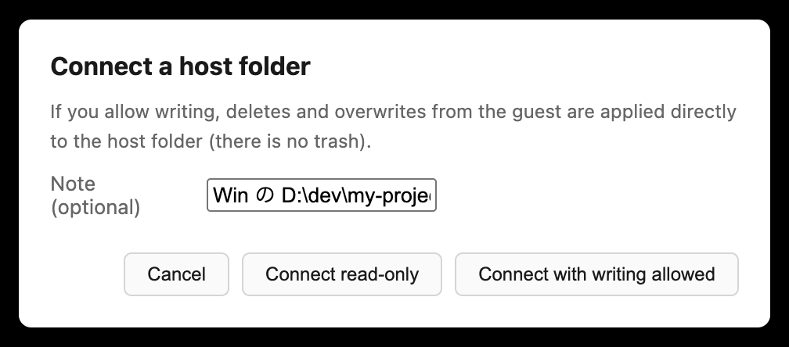
3Install HostFS onto a disk
Open the "Disk Library" and click "Install HostFS" on the bundled disk's row
(human302.xdf). Confirm with "Yes", and a new row,
human302-hostfs.xdf, appears in the library.
It is not inserted automatically. The bundled disk itself is
never modified.
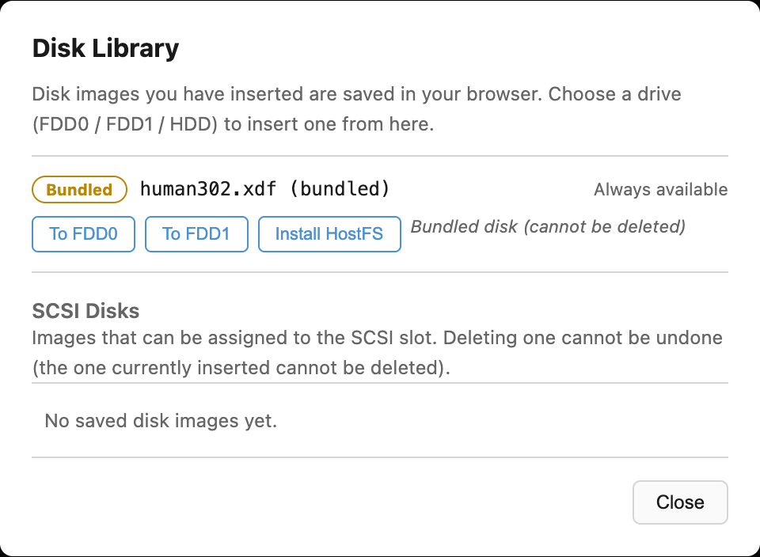
4Insert into FDD0
Click "To FDD0" on the new human302-hostfs.xdf row. The library
closes automatically.
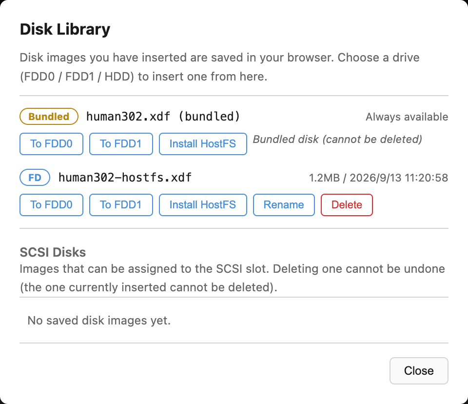
5Boot
If not already running, click "Boot with the Selected Disks" on the start overlay. If already running, click the round arrow (Reset) at the right end of the toolbar.
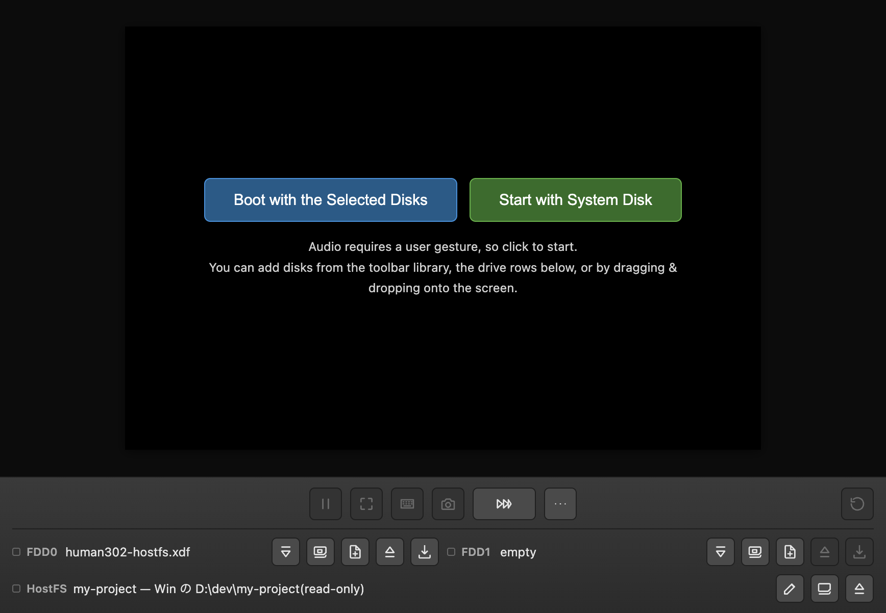
6Check the banner
The startup screen shows "HostFS version 1.00 (WebX68k)" followed by
a line meaning "host folder assigned to drive C:" (it can be D:, etc.,
if an HDD is present).
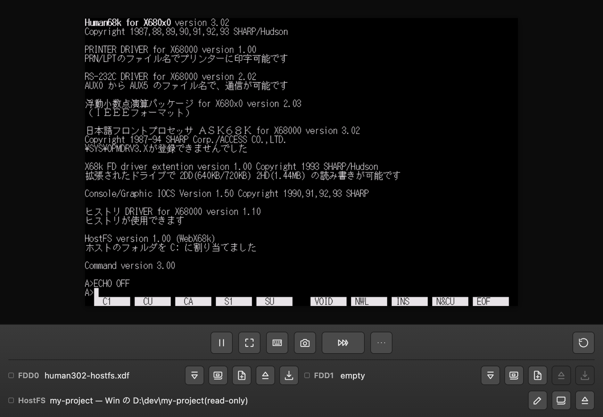
7Try it
Type dir c: at the guest's command line to see the folder's contents.
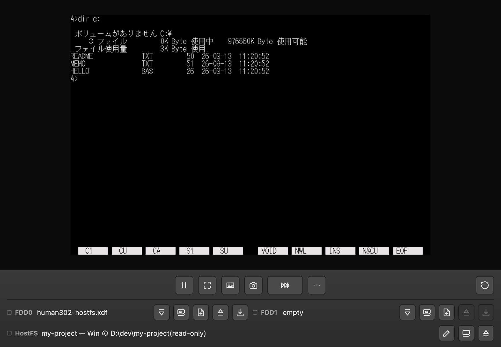
2回目以降の使い方
ページを開き直した後は、ディスクライブラリから、組み込み済みの
human302-hostfs.xdfを「FDD0へ」で入れ直してから起動してください。
フォルダは起動時に自動でつなぎ直されます。ブラウザが改めて許可を求める場合は、
HostFS行に「再接続(許可が必要です)」ボタン(アイコン)が出るので押してください。
起動後にフォルダをつないでも、組み込み済みのディスクで起動していれば、 リセットせずにそのまま使えます。
Using it after the first time
After reopening the page, reinsert the already-installed
human302-hostfs.xdf from the disk library using "To FDD0", then boot.
The folder reconnects automatically at boot. If the browser asks for permission
again, a "Reconnect (permission needed)" button (an icon) appears on the HostFS row — click it.
Connecting a folder after boot also works without a reset, as long as you're running from a disk that already has HostFS installed.
自分のディスク(HDD／FAT12/16として扱えるFD)に組み込む場合
ゲストがHostFSを使うには、起動ディスクのCONFIG.SYSに
DEVICE = \HOSTFS.SYSという1行が必要です。ディスクライブラリの
各行(HDD、またはFAT12/16として扱えるFD)にある
「HostFSを組み込む」ボタンを押すと、その行のディスクへ
自動的にHOSTFS.SYSを書き込み、CONFIG.SYSにこの行を追加します
(すでにCONFIG.SYSがあれば末尾に追記、無ければ新規作成。同じ行が既にあれば
二重には追加しません)。古い版のHOSTFS.SYSで組み込み済みのディスクへ
「HostFSを組み込む」を再度押すと、HOSTFS.SYSだけ新しい版に置き換わります
(CONFIG.SYSの行は増えません)。
Installing onto your own disk (an HDD, or an FD usable as FAT12/16)
For the guest to use HostFS, the boot disk's CONFIG.SYS needs the line
DEVICE = \HOSTFS.SYS. The "Install HostFS" button on
each disk library row (HDD, or an FD that can be handled as FAT12/16) writes
HOSTFS.SYS to that disk and adds this line to CONFIG.SYS
automatically (appended if CONFIG.SYS already exists, created new otherwise; it
won't be added twice if the line is already there). Pressing "Install HostFS"
again on a disk that already has an older HOSTFS.SYS replaces just that file with
the new version (the CONFIG.SYS line is not duplicated).
うまくいかないとき
ドライバ未組み込みの警告: フォルダをつないでいるのに、 起動したディスクにHostFSが組み込まれていない(ゲストのHOSTFS.SYSが 読み込まれていない)ときは、行に「⚠ ゲストで HOSTFS.SYS が読み込まれていません」 と出ます。上の「HostFSを組み込む」でHOSTFS.SYSを組み込んだディスクから 起動してください。読み込みが完了すると警告は消え、リセット・再起動すると また知らせを待つ状態に戻ります。
「ドライブ名が無効です」と出る: 組み込んでいないディスクで
起動していると、dir c:は「ドライブ名が無効です」で失敗し、
HostFS行に上記の警告が出ます。組み込み済みのディスクで起動し直してください。
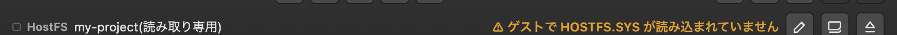
表示していない名前の通知: Human68kの8.3形式で表せず
一覧(dir等)から外した名前があると、行に
「N件の名前は表示していません」と出ます。マウスオーバーで、
これまでに一覧を取ったフォルダの分をまとめて、つないだフォルダからの
相対パス付き(/サブフォルダ/名前の形、1行に1つ)で確認できます
(最大20行、それ以上は「ほかN件」)。あるフォルダをもう一度一覧すると、
そのフォルダの分だけ最新の内容に入れ替わります。
未対応の要求の警告: 常駐ソフトなど、こちらでまだ解読していない HostFSへの要求が来ると、行に「⚠ 未対応の要求（$xx）」(複数の種類があれば 「⚠ 未対応の要求（$xx ほかN種）」)と出ます。この警告が出た場合は、 行をクリックすると診断情報がクリップボードにコピーされるので、それを添えて GitHubのIssue等で報告してください。 コピーされる内容はビルド刻印・ブラウザのUser-Agent・届いた要求の番号/回数/ 先頭26バイトのヘッダ・(該当すれば)ポインタ先32バイト・HostFSの状態 (ドライバ検出有無・ドライブ番号・フォルダ接続有無・モード)だけで、 フォルダの中のファイル名・覚え書きの本文・ホストの実際のパスは 一切含まれません。 クリップボードが使えない環境では、代わりにテキストを選択してコピーできる 小さなダイアログが開きます。リセット・再起動すると記録は消えます。
Troubleshooting
Driver-not-installed warning: If a folder is connected but the disk you booted doesn't have HostFS installed (the guest's HOSTFS.SYS hasn't loaded), the row shows "⚠ HOSTFS.SYS is not loaded in the guest". Boot from a disk that has HOSTFS.SYS installed, using "Install HostFS" above. The warning clears once it loads, and a reset or reboot puts it back into "waiting" state.
Seeing "invalid drive specification": If you're running from a disk
that doesn't have HostFS installed, dir c: fails with "invalid drive
specification" and the HostFS row shows the warning above. Reboot from a disk that
has HostFS installed instead.
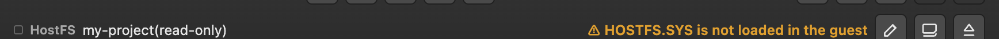
Hidden-name notice: If a listing (dir, etc.) had to drop
names that don't fit Human68k's 8.3 format, the row shows "N name(s) not shown". Hover
to see the combined list from every folder listed so far, each shown as a path relative
to the connected folder (/subfolder/name, one per line; up to 20 lines,
with "N more" beyond that). Listing a given folder again replaces just that folder's
entries with the latest contents.
Unsupported-request warning: If a resident program or similar sends HostFS a request we haven't decoded yet, the row shows "⚠ Unsupported request ($xx)" (or "⚠ Unsupported request ($xx, +N more kinds)" when more than one kind has been seen). If you see this warning, please click the row to copy diagnostic info to the clipboard, and attach it when reporting the issue on GitHub. The copied text only contains the build stamp, the browser's User-Agent, the request number/count/first 26-byte header/[if applicable] the 32 bytes at the pointer it carries, and HostFS's own state (driver detected, drive number, folder connected, mode). It never includes file names inside the folder, the note text, or the folder's actual host-side path. On environments without clipboard access, a small dialog opens instead with the text ready to select and copy. A reset or reboot clears the recorded requests.
知っておくこと
delで消したファイルや、copy・
echo >等で上書きした内容は元に戻せません。
_FILEDATE(ファイルの日時取得・設定)は常に失敗(-6)します。
また、フォルダの改名(ren)は、ブラウザがフォルダの
改名操作(File System Access APIのmove())に対応していない環境では
失敗します(ファイルの改名は対応環境を問わず行えます)。
ホスト側のファイル名は、Human68kの8.3形式(名前8文字+拡張子3文字、ドットは
1つまで)に変換して見せます。次のいずれかに当てはまる名前は一覧に出ません。
拡張子が4文字以上/名前が18バイト超(日本語は1文字2バイト)/ドットが2つ以上/
ドットで始まる/" * + , / : ; < = > ? [ ] |のいずれかを含む/
CP932で表せない文字を含む(空白は使えます)。改行コードは変換せず、
ホスト上のバイト列をそのまま渡します。
覚え書き: File System Access API はフォルダの「名前」しか渡さず、 ホスト側のフルパス(どこにあるフォルダか)は分かりません。「フォルダをつなぐ」ダイアログの 覚え書き欄(任意・60文字まで)にメモしておくと、行に 「フォルダ名 — 覚え書き」の形で表示されます(長いときは省略され、 マウスオーバーで全文を見られます)。行の鉛筆アイコンから後で編集できます。
Things to know
del, or content overwritten via
copy / echo >, cannot be recovered.
_FILEDATE (get/set the file's date/time) always fails (-6).
Renaming a folder (ren) also fails on browsers that don't support
the File System Access API's directory move() (renaming a file works
regardless of that).
Host file names are converted to Human68k's 8.3 format (8-character name + 3-character
extension, at most one dot) before being shown. A name is omitted from listings if
any of the following hold: extension is 4+ characters / name is over 18 bytes
(Japanese characters are 2 bytes each) / more than one dot / starts with a dot /
contains any of " * + , / : ; < = > ? [ ] | / contains a character
not representable in CP932 (spaces are fine). Line endings are not converted — the
host's byte stream is passed through as-is.
Note: The File System Access API only hands you the folder's name, not its full host-side path (where it actually lives). You can jot down a note (optional, up to 60 characters) in the "Connect a folder" dialog's note field; the row then shows "folder name — note" (truncated with an ellipsis when long, with the full text in a tooltip). Edit it later from the pencil icon on the row.